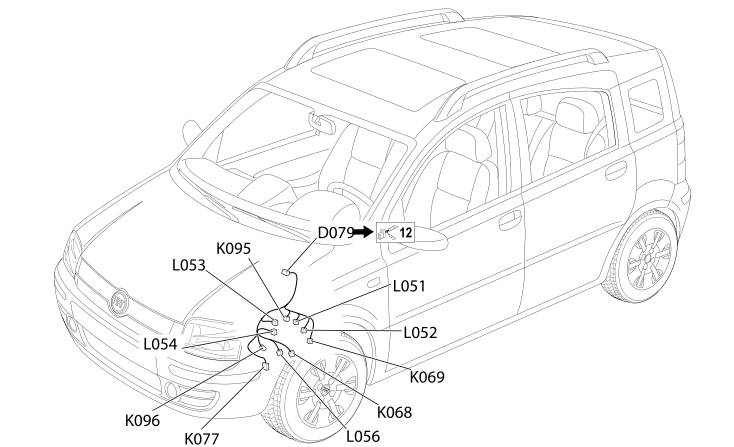

52 AUTOMATIC TRANSMISSION
- Path
- Electrical equipment > 2 WIRING > 52 AUTOMATIC TRANSMISSION
- Kind
- wiring harness
- Applies to
- engines: 1.2 8v; all production periods; only with equipment: Smart gearbox
- Interactive page
- https://sloeber94.github.io/elrnDB-fPnd/en/#/2751690
Applies to: engines: 1.2 8v; all production periods; only with equipment: Smart gearbox

Topics that link to this page (10)
- D079 TRANSMISSION SENSORS COUPLING (GEARBOX BRIDGE)
- K068 SPEED SELECTION POTENTIOMETER (GEARBOX BRIDGE)
- K069 GEAR SHIFT POTENTIOMETER (GEARBOX BRIDGE)
- K077 TRANSMISSION OUTPUT SPEED SENSOR (GEARBOX BRIDGE)
- K095 CLUTCH POSITION POTENTIOMETER (GEARBOX BRIDGE)
- K096 PRESSURE SENSOR ON TRANSMISSION (GEARBOX BRIDGE)
- L051 SOLENOID 1 (GEAR SHIFT) (GEARBOX BRIDGE)
- L052 SOLENOID 2 (GEAR SHIFT) (GEARBOX BRIDGE)
- L053 SOLENOID 3 (GEAR SELECTION) (GEARBOX BRIDGE)
- L056 CLUTCH CONTROL SOLENOID (GEARBOX BRIDGE)